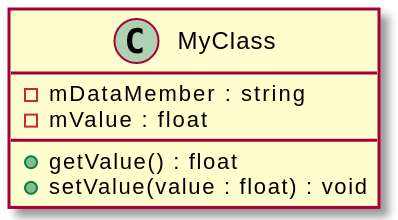
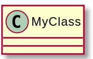
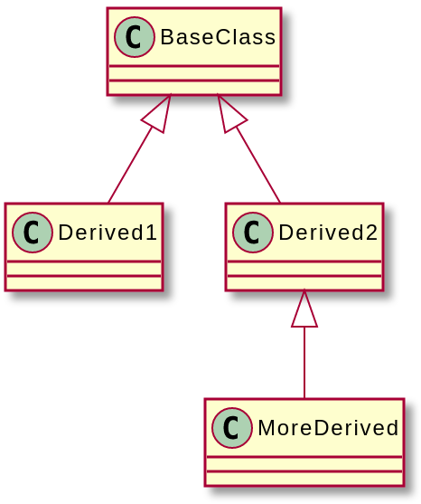
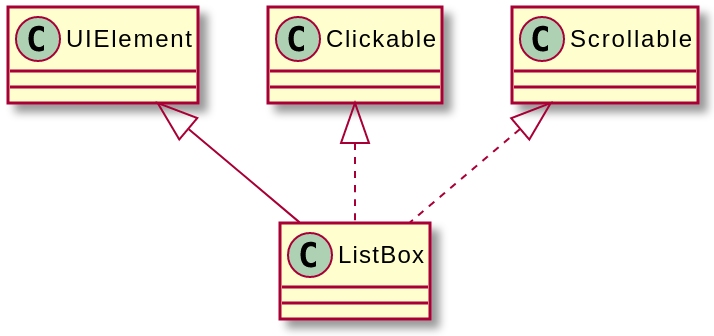
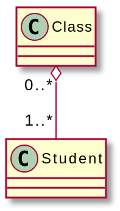
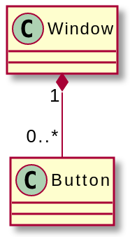
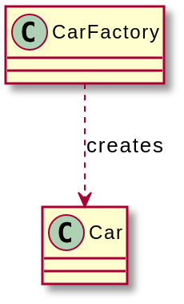
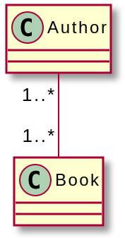

UML
- 참고문헌 : 전문가를 위한 C++(마크 그레고리 / 한빛미디어)
1. UML이란
UML은 클래스 계층이나 서브시스템 사이의 관계, 시퀀스 다이어그램 등을 시각적으로 표현하는 다이어그램에 대한 산업 표준이다.
이 장에서는 클래스 다이어그램에 대해서 간략하게 소개하며, UML 2 버전을 따른다.
2. 다이어그램의 종류
- 구조에 대한 다이어그램
- 클래스 다이어그램
- 컴포넌트 다이어그램
- 컴포지트 구조 다이어그램
- 배치 다이어그램
- 객체 다이어그램
- 패키지 다이어그램
- 프로파일 다이어그램
- 동작에 대한 다이어그램
- 활동 다이어그램
- 커뮤니케이션 다이어그램
- 상호작용 개요 다이어그램
- 시퀀스 다이어그램
- 상태 다이어그램
- 타이밍 다이어그램
- 유스 케이스 다이어그램
3. 클래스 다이어그램
클래스 다이어그램은 클래스의 구성과 여러 클래스 사이의 관계를 시각적으로 표현한다.
3.1 클래스 표현
클래스를 세 칸으로 나눠진 박스로 표현한다. 각 칸은 다음 요소를 표현한다.
- 클래스 이름
- 클래스의 데이터 멤버
- 클래스의 메서드
다음은 vscode의 plantUML extension을 이용하여 그린 클래스 박스로, ㅁ은 -를 나타내며 o은 +를 나타낸다.

MyClass에는 데이터 멤버와 메서드가 각각 두 개씩 있다. 멤버 앞에 붙은 +, -는 가시성을 표현하는데, +는 public 멤버, -는 private 멤버, #은 protected 멤버를 나타낸다.
클래스 다이어그램은 목적에 따라 멤버에 대한 세부사항을 생략하여, 여러 클래스 사이의 관계만 표현할 때 다음과 같이 사용하기도 한다.

3.2 관계 표현
UML 2는 클래스 사이의 관계를 여섯 가지 방식으로 표현할 수 있다.
3.2.1 상속 관계
상속 관계(Inheritance)는 파생 클래스에서 출발새허 베이스 클래스에서 속이 빈 삼각형 화살표로 끝나는 선으로 표현한다. 이는 is-a 관계를 표현한다.

3.2.2 구현 관계
구현 관계(Realization)는 인터페이스를 상속으로 구현한 클래스를 표현한다(is-a 관계). 상속과 인터페이스 구현을 엄밀히 구분하기 위해 상속은 실선으로, 인터페이스 구현은 점선으로 표현한다. 여기서 ListBox 클래스는 UIElement를 상속하고, Clickable과 Scrollable 인터페이스를 구현한다.

3.2.3 집합 관계
집합 관계(Aggregation)는 has-a 관계를 표현한다. 다이어그램에서 선을 그을 때 인스턴스를 포함하는 클래스 쪽에 속이 빈 다이아몬드를 붙인다.
집합 관계를 구성하는 요소의 개수도 표기할 수 있다.
N: 인스턴스가 딱 N개만 있다.0..1: 인스턴스가 없거나 1개만 있다.0..*: 인스턴스가 없거나 여러 개 있다.N..*: 인스턴스가 N개 있거나 그보다 많이 있다.
Class에 Student가 한 개 이상 포함돼 있고, Student 입장에서는 0개 이상의 Class와 관계가 있다. 집합 관계에서 객체를 포함하는 대상이 삭제되더라도 소속된 객체는 계속 존재할 수 있다. 즉, Class가 삭제되더라도 Student는 삭제되지 않는다. 
3.2.4 합성 관계
합성 관계(Composition)는 집합 관계와 개념, 표기법이 비슷하다. 합성 관계를 표현할 때는 속이 찬 다이아몬드로 표기한다.
합성 관계가 집합 관계와 다른 점은, 다른 클래스의 인스턴스를 포함하는 클래스가 삭제되면 소속 인스턴스도 함께 삭제된다는 점이다.
다음은 합성관계의 예를 보여준다. 여기서 Window는 Button을 0개 이상 가질 수 있고, Button은 한 Window에만 속한다. 이 Window가 삭제되면 그 안에 담긴 Button도 모두 삭제된다. 
3.2.5 의존 관계
의존 관계(Dependency)는 한 클래스가 다른 클래스에 의존하는 관계를 점선으로 표현한다. 이 때 의존하는 클래스와 맞닿는 지점에 화살표를 붙인다. 일반적으로 점선 위에 의존 관계를 표현하는 글을 적는다.
다음 예제에서는 Carfactory는 Car를 제조하기 때문에 Car에 의존한다.

3.2.6 연관 관계
연관 관계(Association)는 집합 관계를 일반화한 것이다. 두 클래스를 연결하는 방식으로 표현하며 집합 관계와 달리 방향성은 표현하지 않는다.
아래 그림에서 Book 마다 저자가 있고, Author마다 쓴 책이 있다.
